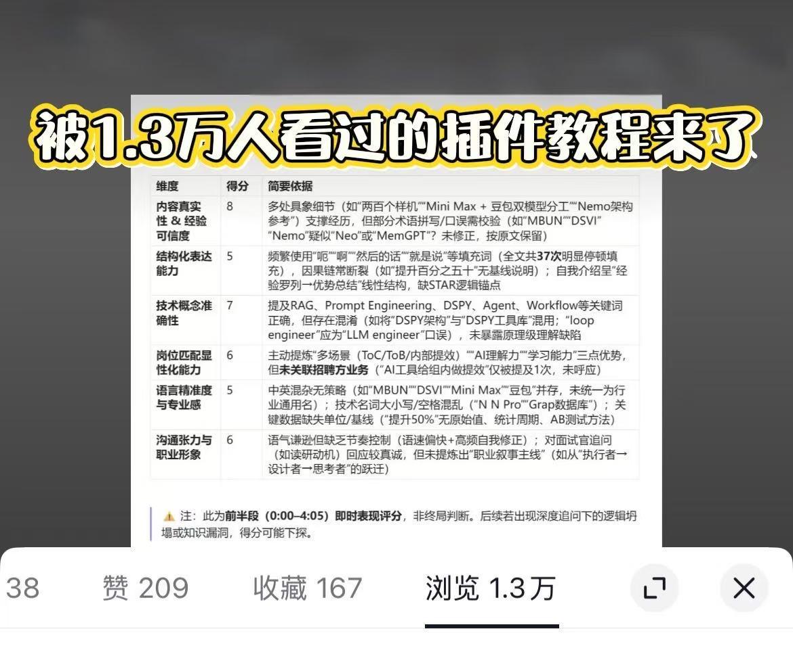

素材难处理
录音、视频格式分散，转写和整理要消耗大量时间，复盘常常不了了之。
个人全栈产品 · Obsidian 插件
一个面向求职者的面试复盘助手：从录音或视频输入，到自动转写、6 维度分析与 AI 复盘报告，最终沉淀为可搜索的个人经验库。

01 / THE PROBLEM
求职者有录音、笔记和模糊印象，却很难在下一次面试前快速复盘。转写、整理与归因的成本过高，让一次真实的练习无法变成可积累的能力。
录音、视频格式分散，转写和整理要消耗大量时间，复盘常常不了了之。
复盘内容没有统一结构，用户很难比较不同面试，也难以在需要时检索出来。
02 / THE BUILD
我独立完成产品定义、功能开发、许可证管理与市场验证，目标是让复盘过程自然地留在用户已经在使用的 Obsidian 里。
利用本地存储与成熟插件生态保护隐私；报告直接写入 Vault，并以“公司 - 职位 - 轮次 - 时间”自动命名，成为长期知识库。
基于 TypeScript 串联阿里云 FC 与 ASR，支持音频/视频输入，生成转写、6 维度评分、逐题分析与改进建议。
自主搭建许可证管理与试用配额机制，完成“开发 → 上线 → 获客 → 付费验证”的完整闭环。

产品通过社交媒体发布与实际用户试用验证需求。市场反馈让功能优先级不再只来自假设，也验证了用户的付费意愿。
03 / OUTCOME
一款个人产品，
也跑通了真实的闭环。
MY RESPONSIBILITY